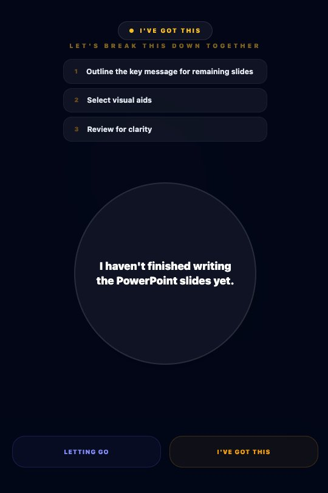
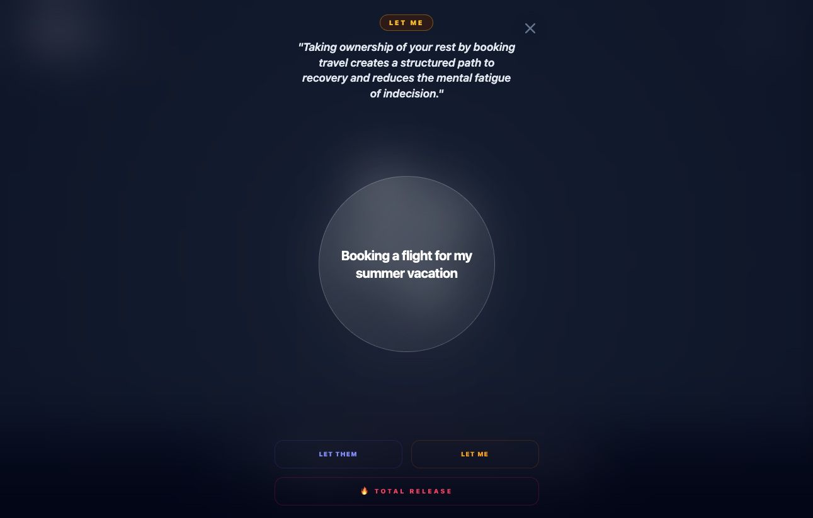
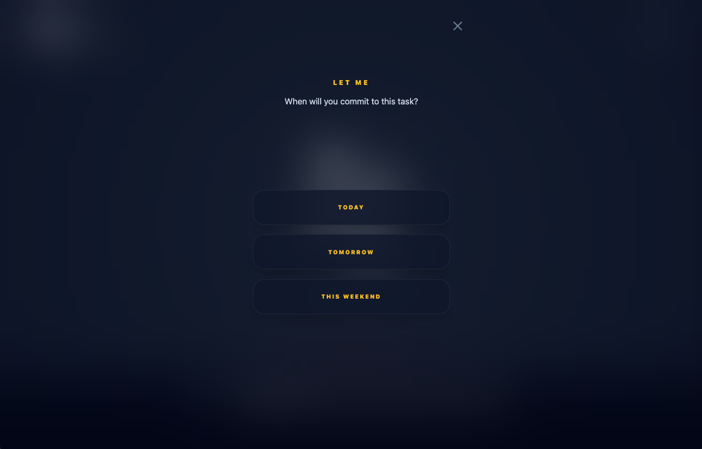
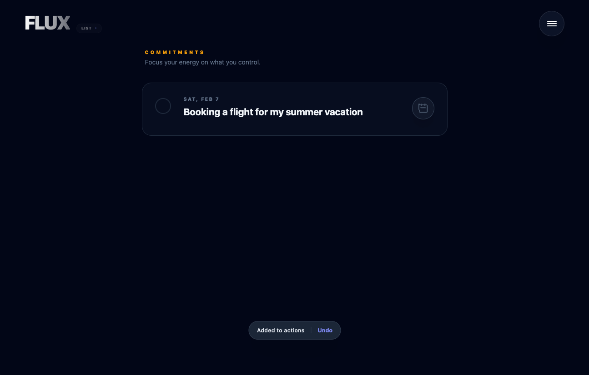

AI Product · Solo Designer & Builder · 30+ Beta Users
Mind Flux ,
Stoic Triage for the Modern Mind
Mobile-first mental health app that reduces cognitive overload through friction-free capture and psychology-informed interactions. A bridge between productivity and psychotherapy , built solo using Cursor, Claude Code, and Gemini.
The Problem
Mental health apps add cognitive load when users are already overwhelmed.
Traditional to-do lists require upfront categorization. Mental health apps require journaling prompts. Both create decision fatigue at exactly the wrong moment , when someone is already stressed.
Could AI help separate "things I can control" from "things I can't"? And would visualizing that separation actually feel relieving?
The Approach
- Zero-Friction Capture , Single-tap voice or text, no required fields, one-handed mobile use during stress
- Psychology-Informed Interactions , Swipe-based triage based on Stoic philosophy's Dichotomy of Control
- Trust Through Craft , Calm-tech aesthetic with fluid animations, visual language that communicates safety
The core mechanic
Physical gesture = psychological relief
Swipe left ("Let Them"): Uncontrollable worries dissolve with satisfying visual feedback
Swipe right ("Let Me"): Actionable items gain visual weight and clarity
The physical gesture creates agency. The visual effect provides dopamine reinforcement for healthy behavior.
The Swipe System
Physical interaction for psychological relief
Users know intellectually what they can and can't control, but anxiety doesn't respond to logic , it needs a physical release mechanism.
When users swipe left to "Let Them," uncontrollable worries dissolve with satisfying visual feedback. Users can revisit the gallery to see their worries in perspective, accompanied by relevant philosophy quotes (Seneca: "We suffer more often in imagination than in reality").
The Cleanse Gallery feature: When users are ready to permanently let go, they can clear the gallery , providing a final ritual of release. Cognitive reframing, evidence of progress, user control, and ritual completion all in one gesture.
The psychology
Cognitive reframing: AI helps users see worries from a healthier perspective
Evidence of progress: The gallery shows how many worries users have successfully released
User control: The "cleanse" action gives users agency over their mental space
Ritual completion: Clearing the gallery provides closure and reinforcement

The "Let Me" Flow
Converting intent into time-bound commitment
Most to-do apps fail because users add tasks but never commit to doing them. The act of capturing feels productive, but without commitment timing, tasks sit forever in a generic list , creating guilt and disengagement.
Step 1
Triage with context
AI reframe appears before asking for commitment , priming users with positive motivation so they understand WHY this task matters before being asked WHEN they'll do it.
Step 2
Low-friction commitment
Three choices only: TODAY, TOMORROW, THIS WEEKEND. No "Someday" option , forces real commitment. Limited choices reduce decision fatigue. Large 44pt touch targets.
Step 3
Confirmation & visibility
Task appears in Commitments with date and checkbox. Subtle "Added to actions" toast with Undo. Seeing it visualized reinforces the decision and adds accountability.
"Offloading provided immediate relief , users felt lighter within 30 seconds, before even organizing tasks."
, Beta user research finding



V2 , Research-Driven Evolution
Therapist interviews fundamentally shifted the product strategy
After beta launch, I interviewed licensed therapists to validate my therapeutic approach. What I learned changed everything.
What therapists revealed
- 70% of therapy clients struggle with work/relationship burnout or ADHD , validating my target audience but revealing I was solving the wrong problem
- ADHD users need task decomposition , breaking overwhelming projects into micro-tasks with time anchoring (weak time perception means tasks without committed times never happen)
- AI can replace therapy workflows , breaking down tasks into subtasks, scheduling prompts at capture, pattern detection for when professional intervention is needed
Before V2
Users manually added tasks one-by-one. Required upfront categorization. No automatic breakdown or scheduling. Desktop-focused. Result: more cognitive load, not less.
After V2
AI-powered "Nebula Input" , voice/text brain dump. Auto-parses thoughts into bubbles. Automatic task breakdown + time anchoring. Mobile-first, one-handed design. Native calendar sync.

Outcomes
What the beta taught me
85%
Scheduling completion
Progressive disclosure reduced decision fatigue , 85% of users completed the scheduling flow.
92%
Mobile captures
92% of captures happened on mobile during stress moments , validating the mobile-first approach.
3x
Task completion
Calendar integration drove 3x higher task completion vs. in-app-only reminders.
Key Learning: AI excels at task decomposition and time anchoring, but emotional reframing requires human expertise. This revealed a hybrid care model opportunity: app handles structure, therapists handle complexity.
What's Next
- Integrate pre-therapy assessment (PHQ-9, GAD-7) triggered when AI detects distress patterns
- Build therapist referral directory with direct booking
- Test "warm handoff" protocol: app shares anonymized user patterns to reduce first-session intake time by 50%
- Partner with 2–3 clinics to pilot B2B2C model through corporate wellness programs